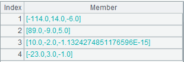
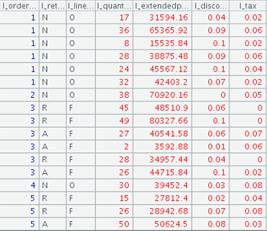
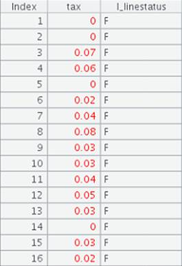

Description:
The external library function is for linear programming and calculates the minimum value in linear objective function under linear constraints.
Syntax:
lineplan(A,B,C)
Note:
The function uses simplex method to solve regular linear programming problems as well as problems where the basic solution isn몶t a feasible solution (see example: the special problem). The problem needs to be converted to the following standard form when getting parameters:
Target function:
Linear inequality constraints: 
Parameters:
|
A |
A sequence representing coefficient matrix |
|
B |
A sequence representing a constraints matrix |
|
C |
The objective function matrix |
Return value:
A sequence. Note the method of getting the target result. When trying to output the minimum value and its coordinates, the former is to multiply the first number of the first sub-sequence by -1, and the coordinates are the first n numbers of the second sub-sequence, where n is the number of x.
Example:
Here are how to solve simple linear programming problems defined by linear inequalities:
Regular problems:

|
|
A |
|
|
1 |
[[2,1],[1,1],[0,1]] |
Input coefficient matrix A |
|
2 |
[[10,0],[8,0],[7,0]] |
Input constraints matrix B |
|
3 |
[[-4,-3],[0,0],[0,0]] |
Input objective function matrix C |
|
4 |
=lineplan(A1,A2,A3) |
 |
The special problem:

|
|
A |
|
|
1 |
[[1,1],[-1,-1]] |
Input coefficient matrix A |
|
2 |
[[2,0],[-1,0]] |
Input constraints matrix B |
|
3 |
[[1,2],[0,0]] |
Input objective function matrix C |
|
4 |
=lineplan(A1,A2,A3) |
Get the result: the objective function몶s minimum value is 1 and its coordinates are (1.0,0.0) |